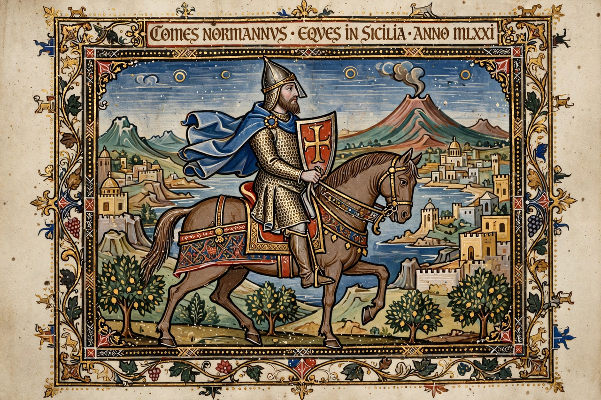

| Roger I of Sicily | |
|---|---|
 Roger I, Great Count of Sicily | |
| Born | c. 1031, Normandy |
| Died | 22 June 1101, Mileto, Calabria |
| Reign | Count of Sicily, 1071–1101 |
| House | Hauteville |
| Successor | Simon of Sicily (then Roger II) |
Roger I (c. 1031 – 22 June 1101), nicknamed Roger Bosso and The Great Count, was a Norman nobleman who became the first Count of Sicily from 1071 to 1101. The youngest son of Tancred of Hauteville, he arrived in southern Italy in the 1050s and, with his elder brother Robert Guiscard, undertook the Norman conquest of Muslim Sicily, a campaign lasting three decades.
Roger and Robert crossed to Sicily in 1061, seizing Messina and winning the Battle of Cerami in 1063. Palermo fell in 1072, and under the agreement with Guiscard, Roger held Sicily as count under his brother's overlordship. The conquest was completed with the fall of Noto in 1091. Roger also conquered Malta in 1091. In 1098 Pope Urban II granted him and his heirs the Apostolic Legateship, giving the Sicilian counts unusual authority over the island's church.
Roger governed a religiously and ethnically mixed population of Muslims, Greek Christians, Lombards and Normans with notable pragmatism. He retained Muslim administrators, encouraged immigration of Latin Christians, founded bishoprics and monasteries, and made his court at Mileto and later Palermo a centre of Norman power. His third wife, Adelaide del Vasto, served as regent after his death. His younger son, Roger II, united Sicily with the Norman mainland possessions and was crowned the first King of Sicily in 1130, creating the Kingdom of Sicily.